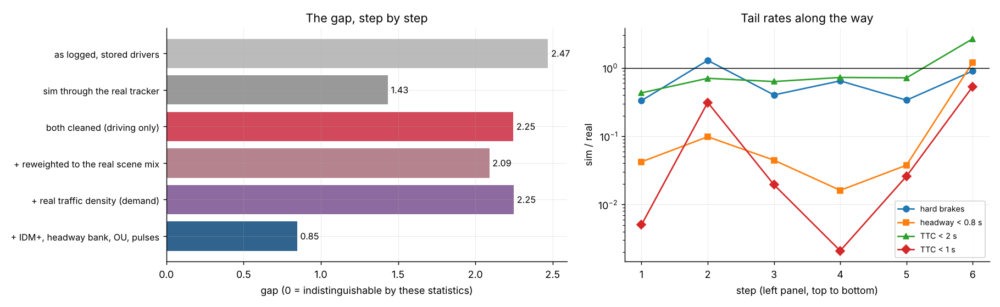
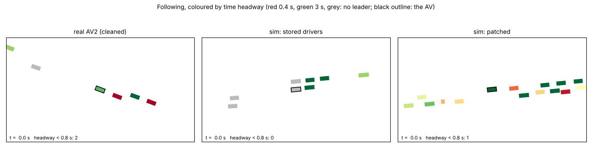
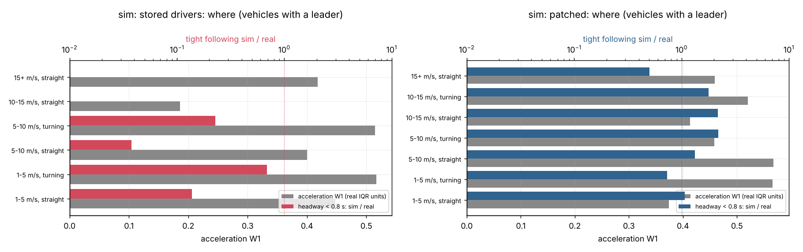
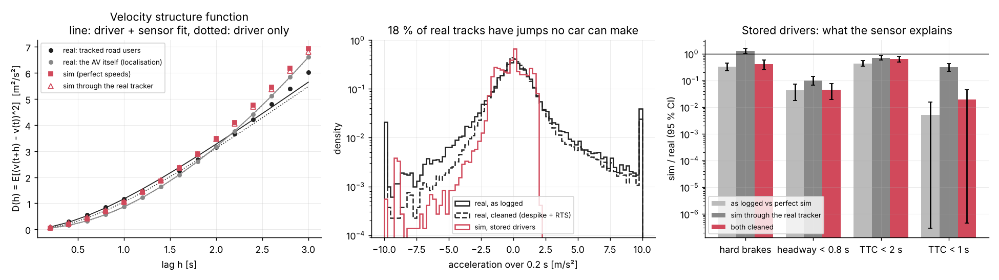
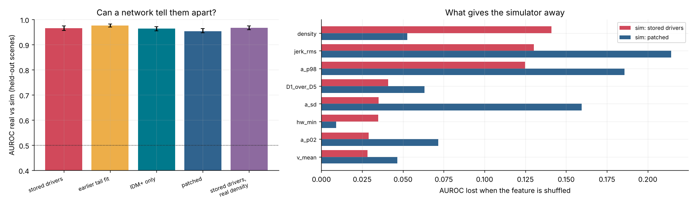
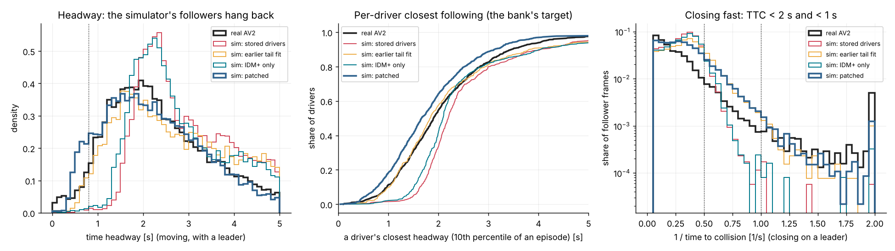

Closing the Sim-to-Real Gap
Every earlier comparison said the simulator's drivers are too gentle. Before patching anything, this splits the difference into the three places it can come from: the sensor (real speeds come from a tracker), the scene (field of view and traffic density) and the drivers. Only the last is worth patching, and it is patched with mechanisms fitted to the logs.
The gap, step by step
| Step | gap | hard brakes | headway < 0.8 s | TTC < 2 s | TTC < 1 s |
|---|---|---|---|---|---|
| as logged: stored drivers against the real tracker | 2.47 | ×0.33 | ×0.04 | ×0.43 | ×0.01 |
| sim pushed through the real tracker | 1.43 | ×1.29 | ×0.10 | ×0.70 | ×0.31 |
| both cleaned (driving only) | 2.25 | ×0.40 | ×0.04 | ×0.63 | ×0.02 |
| + reweighted to the real scene mix | 2.09 | ×0.64 | ×0.02 | ×0.72 | ×0.00 |
| + real traffic density (demand ×3.9 alone) | 2.25 | ×0.34 | ×0.04 | ×0.71 | ×0.03 |
| + IDM+, headway bank, launches, OU residual, pulses | 0.85 | ×0.90 | ×1.20 | ×2.66 | ×0.53 |
gap = mean |log sim/real| of four tail rates (capped at log 20) + mean Wasserstein-1 of seven distributions in real IQR units; 0 = indistinguishable by these statistics. The final row's 95 % bootstrap CIs are hard brakes [0.69, 1.18], tight following [0.91, 1.60], TTC < 2 s [2.20, 3.19] and TTC < 1 s [0.37, 0.78]. The earlier tail fit (avlab.tail_calibrate) reaches 1.33.


Still different. A classifier tells real from simulated vehicles at AUROC 0.954 (stored drivers 0.966); its clues moved from traffic density to jerk and the acceleration tail. TTC under 2 s overshoots while TTC under 1 s undershoots. Standstill gaps came out smaller than real. Log replay barely improves: the 5 s error is 16.7 → 16.2 m, against 10.1 m for constant velocity.
First principles
- Three sources of a gap. Sensor, scene, drivers. Patch drivers only after removing the other two, or the fit learns the tracker.
- The sensor can be fitted from the logs. With y = v + e, an OU driver acceleration and an AR(1) tracker error, the velocity structure function D(h) = 2 sa² τ² (h/τ − 1 + e−h/τ) + 2 sm² (1 − ρk) separates the smooth driver (∝ h²) from the jumpy sensor. The AV's own track comes from localisation and is the control. It shows almost no sensor term (0.08 against 0.29 m/s).
- Parity both ways. Compare clean(real) with clean(corrupt(sim)): identical processing on both sides. An RTS smoother under the fitted model cleans; the same model corrupts.
- Car following is structural before it is parametric. IDM's equilibrium gap is s*/√(1 − (v/v0)4), which grows as followers near their desired speed. IDM+ uses min(free, interaction), so the gap is exactly s0 + vT.
- Deconvolve through the simulator. A driver's T shows in a log only blurred. Use the simulator as the measurement model and shift T's quantiles by real − simulated until they agree.
- A smooth residual needs no state. Random Fourier features with Cauchy frequencies have exactly the OU covariance (Bochner). Hashed from the driver id, they keep common random numbers.
- Ask a classifier. AUROC of real-vs-sim is the honest single number; permutation importance says what to fix next.
The engineering DAG
real_logs ─► tracker_noise ─► real_clean ──────────────────────────────────────┐
│ │ │
│ └─► headway_bank (deconvolution: 3 simulations) │
│ │ │
├──────────────────────────┴─► refit (CEM: 4 × 8 city copies) │
│ │ │
│ └─► sim_patched (+ dense) │
sim_worlds (stored | tail_fit | IDM+) ──────────────────────┐ │
└────────────────────────────────► processed (raw | sensor | clean)
├─► mix ─► scoreboard ◄┘
├─► following_check
├─► discriminator
refit, headway_bank ──────────────────► replay ─► report
Each stage is a pure function of its inputs and config, cached as results/realism/cache/<stage>-<sha256(name, config, input keys, source)>.pkl by the auto-tagger's runner. Changing the refit's search box reruns the refit and everything below it, and never re-reads the logs.
Pros
- Every number traces to one cached stage
- Simulations inside stages run once
- Quick mode has its own cache
Cons
- Whole scene lists are pickled (a few hundred MB)
- A module change outside a stage's own function needs a config version bump
Distribution scoreboard
stats.py · scoreboardOne extractor runs on real and simulated scenes. It produces four tail rates and seven distributions, with a bootstrap over scenes.
measure(scene): per moving non-ego vehicle-frame: v, a, a1, jerk, headway, 1/TTC; standstill gaps; tail counts
scoreboard(R, S):
tails sim/real with CI (resample scenes on both sides)
dists W1(real, sim) / IQR(real)
gap = mean(min(|log ratio|, log 20)) + mean(W1)
Pros
- One number to minimise, one table to read
- The CIs say which differences are real
Cons
- A fixed statistic list: lateral behaviour and gap acceptance are not on it
Where
stats.where_tableThe same comparison per context cell: speed bin × leader × turning.
for speed in (1-5, 5-10, 10-15, 15+) × leader × turning:
acceleration W1; share of headway < 0.8 s, sim/real; headway W1

Pros
- Shows tight following missing in every bin for the stored drivers
Cons
- No junction or lane-type labels on real scenes; turning stands in
Measurement parity
measure.py · tracker_noise, real_clean, processed18 % of real tracks contain impossible speed jumps; the rest carry a correlated 0.29 m/s error. Cleaning the logs halves their hard-braking rate.
fit (s_m, ρ, s_a, τ) to D(1..15) of non-spiky tracks clean(real) = RTS(Hampel(y)) with F = [[1, dt, 0], [0, e^(−dt/τ), 0], [0, 0, ρ]], y = v + e corrupt(sim) = v + AR1(s_m, ρ) + spikes(rate, empirical sizes); positions + N(0, jitter) crop(real) = road users within 80 m of the ego (as simulated scenes are cut)

Pros
- Removes the part no driver model should chase
- Built-in control: the AV's own track
- Brackets the answer from both directions
Cons
- Stationary, object-independent noise; real noise grows with range and occlusion
- Smoothing also removes some real high-frequency driving
Scene-mix reweighting
mix.py · mixA density ratio over scene context (speed, density, standing share, moving vehicles, turning) reweights simulated scenes toward the real mix.
p = logistic(real vs sim | context) w = clip(p / (1 − p) · n_sim / n_real, 0.05, 20), normalised; ESS = (Σw)² / Σw²
Pros
- Separates a different city from different drivers without simulating
Cons
- Only reweights contexts the simulator produces: ESS 47 of 531. Real scenes have 14 moving vehicles within 80 m, simulated ones 4. That finding led to the demand knob.
Classifier two-sample test
discriminator.py · discriminatorAn MLP is trained to tell real vehicles from simulated ones, split by scene. AUROC 0.966 for stored drivers, 0.954 patched.
units = moving vehicles ≥ 5 s, 13 summary features train on half the scenes (balanced), AUROC on the other half (bootstrap CI) importance(f) = AUROC − AUROC(f shuffled)

Pros
- No statistic chosen in advance
- Names the next thing to fix: now jerk and the acceleration tail
Cons
- Wins on any difference, including harmless ones
Car-following fits
following.py · following_checkFit IDM per real leader-follower episode. The honest result is negative: the parameters are not identifiable from 4 to 10 s of urban driving.
episode: one follower, one leader, ≥ 4 s least squares of IDM on a = dv/dt → (T, s0, amax, b, v0), R² check on perfect simulated data, where T is known: Spearman(T_fit, T_true) = 0.33
Pros
- Looks straight at the mechanism
- The check against simulator truth caught the problem
Cons
- Not identifiable; parameters pile on their bounds. Hence method 7.
Headway bank by deconvolution, plus IDM+
following.deconvolve · xnet.sim · headway_bankFind the T distribution whose simulated closest-following matches the real one, with the simulator itself as the measurement model.
r = per-episode p10 headway (clean real); T_q = quantiles(r) − 0.8 repeat: s = p10 headways of clean(corrupt(sim(IDM+, bank(T_q)))); T_q += quantiles(r) − quantiles(s) quantile error [s]: 0.084 → 0.063 → 0.039; bank T at the 10/50/90th percentiles = 0.32 / 1.04 / 2.8 s (stored: 1.0–1.8 s)

Pros
- Every blur (unconstrained gaps, s0/v, the sensor) is inside the loop
- IDM+ removes the structural reason followers hang back
Cons
- Only T is deconvolved; s0, amax, b keep the simulator's spread
Smooth acceleration residual
xnet.sim.ou_residualA per-driver residual correlated in time like real throttle modulation. White noise is not.
e_i(t) = σ · √(2/K) Σ_k cos(w_ik t + φ_ik), w ~ Cauchy(0, 1/τ), φ ~ U(0, 2π), hashed from the driver id covariance σ² exp(−|Δt| / τ) (Bochner); K = 8; fitted: σ = 0.57 m/s², τ = 3.2 s
Pros
- No State field
- Common-random-number safe
- Tested: unit variance, lag correlation e−1/τ
Cons
- Not exactly Gaussian at K = 8
- Ignores the scene: it does not grow near leaders
Refit
refit.py · refitA cross-entropy search over 8 knobs. Every candidate drives its own copy of the city in one vmapped run with common random numbers.
knobs: demand, v0_scale, amax_scale, ou_σ, ou_τ, pulse_rate, bank share, s0_scale; idm_plus = 1 4 generations × 8 candidates; loss = scoreboard gap of clean(corrupt(sim)) against clean(real) → demand 3.9, v0 ×1.18, amax ×1.58, σ 0.57, τ 3.2, pulses 0.0097/s, bank 0.92, s0 ×0.62
Pros
- Fitted on exactly the scoreboard the report uses
- Candidates differ by knobs, not dice
Cons
- Noisy at this budget: the winner scored 0.74 on its own run and 0.85 on a fresh one
- Version 1, without standstill gaps, bought tight following with s0 ×0.3; the statistic now rules that out, but s0 still drifts low
Realism gates and log replay
tests/test_realism.py · replay.pyCI fails if the patched world stops beating the stored one. Replay checks prediction, not only statistics.
gates: patched gap < stored; tight and TTC < 1 s closer to real; hard brakes within 2×; AUROC drops replay: seed 30 real scenes, 5 s rollouts with bank-drawn traits → 16.7 m stored, 16.2 m patched, 10.1 m constant velocity
Pros
- Regressions are caught; 18 tests in all
- Every new knob defaults off: stored results reproduce (all counts identical)
Cons
- The gates guard the last run's file, not a new run
- Replay is dominated by routes and signals, not following
Use it
av-world realism run # the cached DAG (~45 min the first time on 4 cores; --quick ~10 min) av-world realism report # the gap, step by step av-world realism explain # which stages are fresh
from av_world import easy beh = easy.realism.preset() # patched human drivers as an xnet Behaviour (also loads the trait bank)